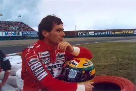

Em uma garagem silenciosa, havia um carro diferente de todos os outros. Seu nome era McLaren Senna. Ela não tinha sido criada apenas para ser bonita ou confortável. Tinha sido criada para uma coisa: ser rápida.
Quando seu motor V8 acordava, o silêncio desaparecia. O ronco preenchia a garagem e parecia dizer que estava na hora de correr.
Certo dia, a Senna foi levada para uma pista. Assim que o sinal ficou verde, ela acelerou. Cada curva era feita com precisão, e nas retas parecia que o vento não conseguia acompanhá-la.
Seu nome carregava uma grande responsabilidade. Senna era uma homenagem a Ayrton Senna, um dos maiores pilotos da história da Fórmula 1. Por isso, aquele carro representava mais do que velocidade: representava a busca por superar os próprios limites.
Quando terminou sua volta e voltou aos boxes, seu motor finalmente ficou em silêncio.
Mas todos que estavam ali entenderam uma coisa:
A McLaren Senna não foi feita apenas para andar. Foi feita para deixar sua marca na história.
